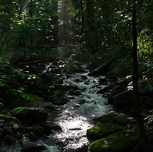
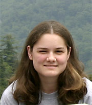
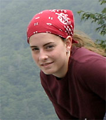
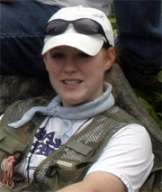
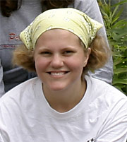

Biodiversity Research
in the Great Smoky Mountains National Park
(ALL LINKS WILL OPEN IN NEW BROWSER WINDOW. TO RETURN TO THIS PAGE, JUST CLOSE YOUR BROWSER WINDOW.)
What would it be like to be part of a scientific research team funded by the National Science Foundation? What would it feel like to do some of your work suspended in a tree 80 feet above the ground in a forest of the Appalachian Mountains?
Are you fascinated with nature and wildlife? Are you concerned about the fate of the world around you? Consider yourself a 20 year old college student and join Cheryl, Erin, Tommy, Amber, and Ashley as they become involved in Dr. Harold W. Keller’s passion for the beauty and diversity of the Great Smoky Mountains National Park (GSMNP).

 Hi, I'm Amber!
I'm Ashley!
  I'm Cheryl!
I'm Erin!

|
|
|

Dr.
Harold W. Keller is well known for his research on myxomycetes
(slime molds!), life forms he calls "the biological jewels of nature".
Dr. Keller has stated in his own words, “I fell in love with the Great
Smoky Mountains right after I fell in love with my wife!” His passion
for the GSMNP is equaled
by his commitment to involving undergraduates and graduate students in
scientific
research (click on link to learn more). This commitment has resulted
in numerous grants that have funded research providing great adventures
for students like you!
|
|
|

Most things in life have a price tag attached and scientific research is no exception. Most scientists either work for large corporations who profit from the scientist’s results or they teach in universities and write grants to get extra funding to support their research. The research that you are going to experience in the following pages has been funded with approximately $190,000 by the National Science Foundation (NSF), the National Geographic Society, and Discover Life in America through multiple grants written between 2000 and 2005. It takes a great deal of money to cover the expenses of taking a large team of researchers to a field site and scientists must be very good at writing clearly and budgeting carefully to convince organizations to fund their grant proposals!
This research project is named RUI: Biodiversity and Ecology of Tree Canopy Biota in the Great Smoky Mountains National Park and it’s purpose is to complete the first comprehensive survey and inventory of tree canopy biodiversity for cryptogams, selected insect groups, and molluscs in the Great Smoky Mountains National Park. The objectives to be achieved with this biodiversity survey will be to:
|
|
•assemble
a multidisciplinary research team of experts who will collect, identify,
and curate this diverse group
of organisms and serve as mentors who will give special lectures, slide
shows, hands on identification of specimens, and field demonstrations to
aid undergraduate students in the recognition of specimens and collection
of bark samples
• compare the assemblages (groups) of tree canopy organisms with those found on ground sites • search for species new to science in all of the targeted groups of organisms • sample for cryptogams along vertical transects of individual trees at different heights to quantify the association of the relative species composition, abundance, and diversity of these assemblages with the available environmental characteristics (host tree species, vegetation type, height class, light, pH, and humidity) • compare the tree canopy-targeted groups on different tree species • provide research experiences for students that will enhance opportunities for postgraduate study |